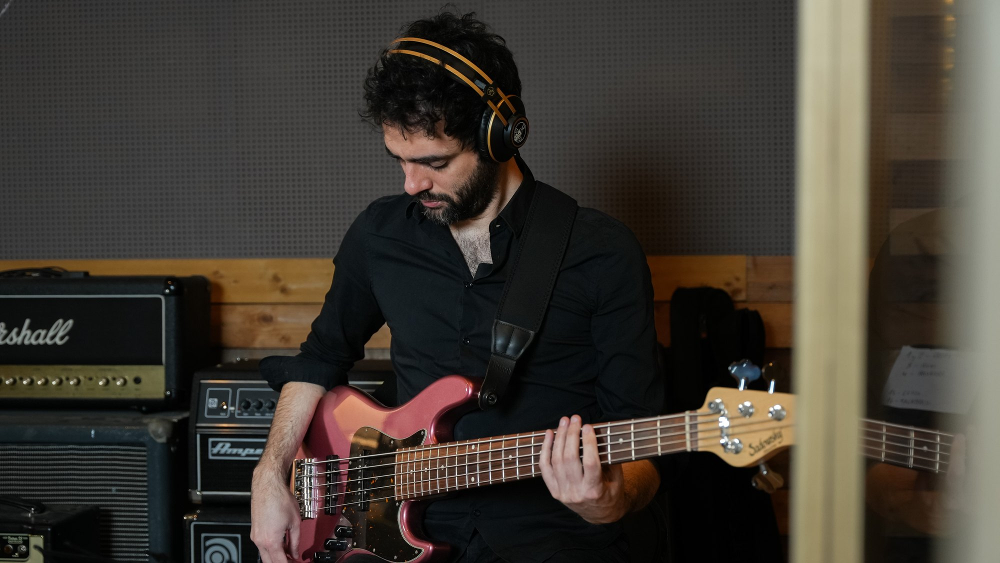
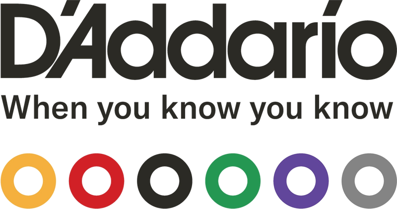

Presencial · Online
Clases de bajo
Clases de bajo eléctrico para todos los niveles, presenciales en Barcelona u online.
- Técnica, groove y sonido
- Lectura y armonía aplicada al bajo
- Jazz, música brasileña, latin y pop

Bajista argentino afincado en España desde 1999. Su lenguaje une jazz, soul, pop, música brasileña y ritmos latinos, con un sonido marcado por la riqueza rítmica, la precisión y la sensibilidad.
Ha tocado con artistas como Saulo Fernandes, Margareth Menezes, Paula Lima, Jair Oliveira, Gabriel Grossi, Aca Seca Trío y Nella Rojas, y ha grabado junto a Paquito D'Rivera, Bobby Shew, Luis Salinas y Perico Sambeat, entre otros.
En la escena española ha compartido escenario con Rita Payés, Lucía Fumero, Juan Gómez «Chicuelo», Llibert Fortuny, Albert Bover y Raynald Colom. Hoy forma parte de varios proyectos en Barcelona, con los que actúa en festivales y clubes de todo el mundo.
En 2026 estrenó Portrait of Jaco, su proyecto propio dedicado a la música de Jaco Pastorius.
Es artista D'Addario.
No hay fechas anunciadas ahora mismo. Para contratación, escríbeme.
Axé Music · Brasil · Pop
Modern Jazz
Pop · Jazz
Jaco Pastorius Music
Jazz · Latin · Brasil
Jazz · Pop
Jazz · Latin
Hip Hop · Jazz
Jazz · Brasil
Clases de bajo eléctrico para todos los niveles, presenciales en Barcelona u online.
Grabo líneas de bajo para tus canciones, en estudio o a distancia, para producciones de cualquier país.

Si mi música o mis vídeos te acompañan, puedes apoyarlos en Ko-fi.